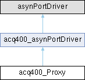

- Generated by
 1.17.0
1.17.0
|
ACQ400_XRM (xrmIoc)
|

Public Member Functions | |
| virtual asynStatus | writeInt32 (asynUser *pasynUser, epicsInt32 value) |
| virtual asynStatus | writeFloat32Array (asynUser *pasynUser, epicsFloat32 *value, size_t nElements) |
| Public Member Functions inherited from acq400_asynPortDriver | |
| acq400_asynPortDriver (const char *portName, int maxAddr, int interfaceMask, int interruptMask, int asynFlags, int autoConnect, int priority, int stackSize) | |
| virtual | ~acq400_asynPortDriver () |
Static Public Member Functions | |
| static void | create_instance (const char *portName) |
| static const SamplePrams * | getSamplePrams () |
Additional Inherited Members | |
| Protected Member Functions inherited from acq400_asynPortDriver | |
| asynStatus | gip (int pnum, int *pram) |
| asynStatus | gip (int addr, int pnum, int *pram) |
| asynStatus | sip (int addr, int pnum, int pram) |
| asynStatus | sip (int addr, int pnum, unsigned pram) |
| asynStatus | sip (int addr, int pnum, epicsInt64 pram) |
| asynStatus | gsp (int pnum, int maxchar, char *str) |
| asynStatus | ssp (int pnum, const char *str) |
| Protected Attributes inherited from acq400_asynPortDriver | |
| epicsEventId | eventId |
| int | P_RUNSTOP |
| int | P_UPDATES |
| int | P_TS_USEC |
| int | P_MON_RL |
| int | mrl_param |